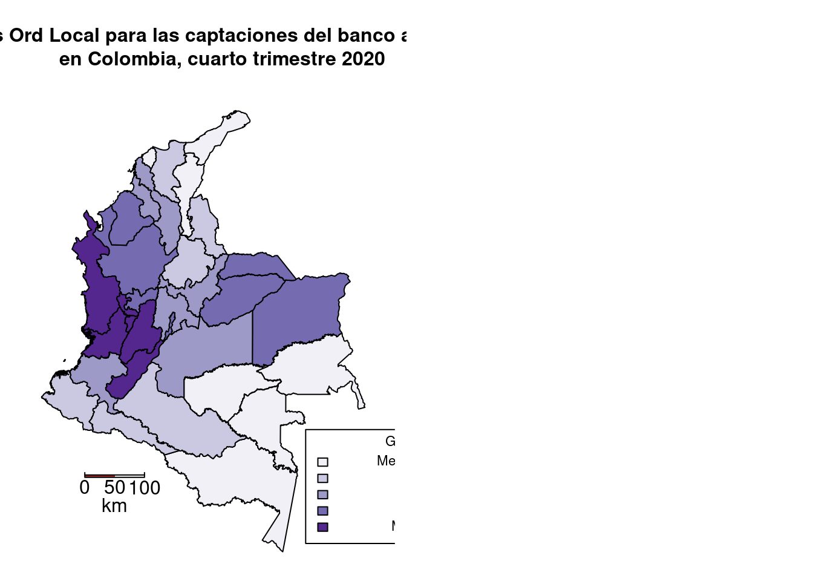
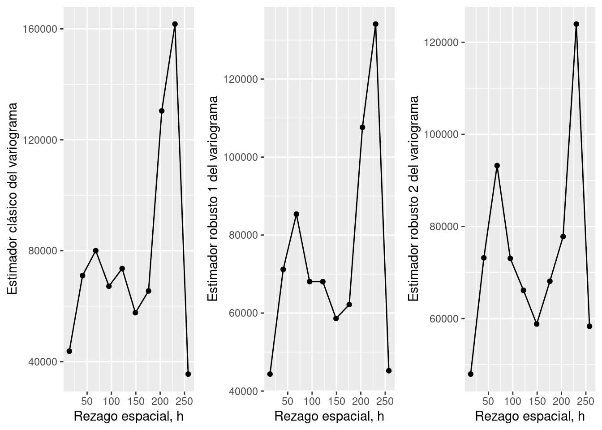
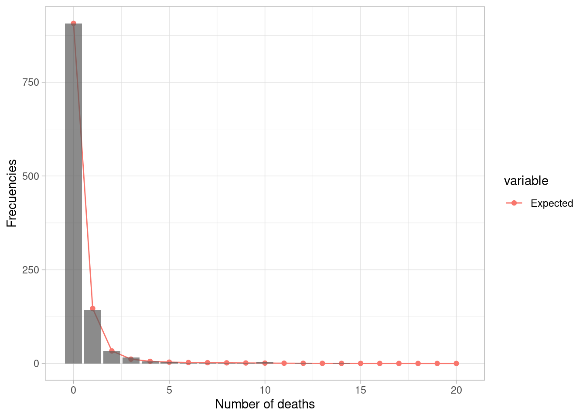
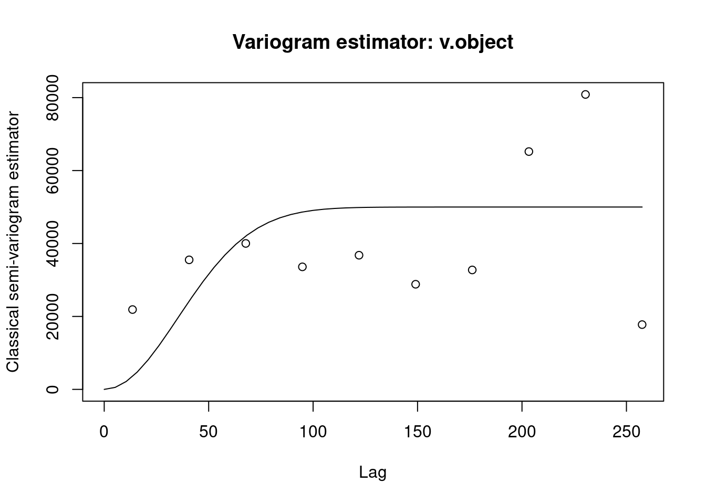
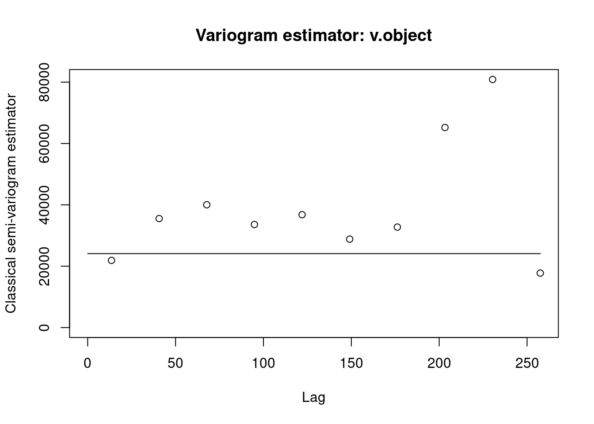
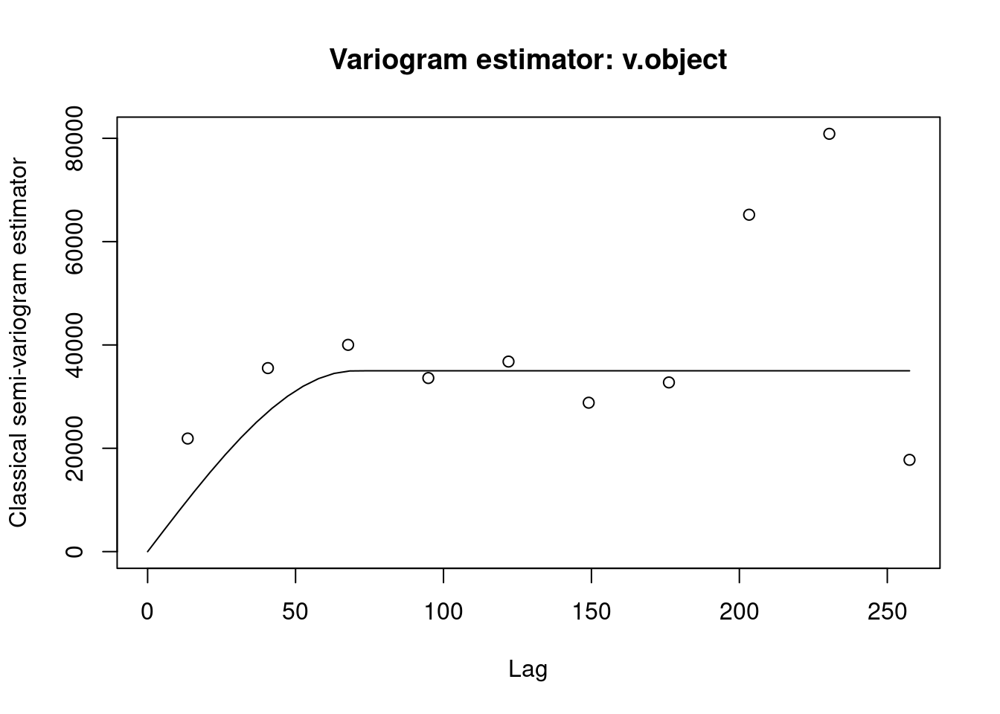
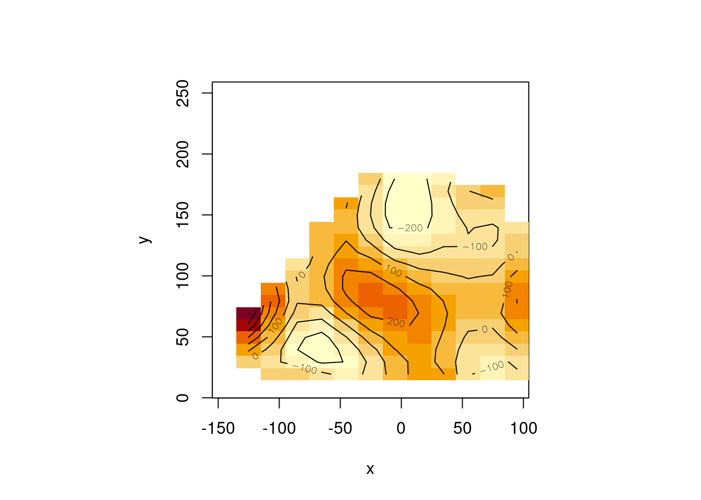

Chapter 8 Geoestadística con sgeostat
8.1 Data Load
aquifer=read.table("data/aquifer.txt",head=T,dec=",")
head(aquifer)## Este Norte Profundidad
## 1 42.78275 127.62282 1464
## 2 -27.39691 90.78732 2553
## 3 -1.16289 84.89600 2158
## 4 -18.61823 76.45199 2455
## 5 96.46549 64.58058 1756
## 6 108.56243 82.92325 17028.3 Including Plots
g1=ggplot(aquifer, aes(Profundidad, Este)) +
geom_point() +
geom_line() +
xlab("Este") +
ylab("Profundidad")
g2=ggplot(aquifer, aes(Profundidad, Norte)) +
geom_point() +
geom_line() +
xlab("Norte") +
ylab("Profundidad")
g3=ggplot(aquifer, aes(Profundidad, Este*Norte)) +
geom_point() +
geom_line() +
xlab("Interacción este,norte") +
ylab("Profundidad")
plot_grid(g1,g2,g3)cor(aquifer)## Este Norte Profundidad
## Este 1.0000000 0.1147565 -0.7788885
## Norte 0.1147565 1.0000000 -0.6200923
## Profundidad -0.7788885 -0.6200923 1.0000000scatterplot3d(aquifer, highlight.3d=TRUE, col.axis="blue",
col.grid="lightblue", main="Tendencia de Profundidad", pch=20)
reg1 <- lm(Profundidad ~ Este + Norte, data = aquifer)
residuales1 <- residuals(reg1)
summary(reg1)##
## Call:
## lm(formula = Profundidad ~ Este + Norte, data = aquifer)
##
## Residuals:
## Min 1Q Median 3Q Max
## -366.96 -161.53 -30.71 148.15 651.20
##
## Coefficients:
## Estimate Std. Error t value Pr(>|t|)
## (Intercept) 2591.4302 38.9599 66.52 <0.0000000000000002
## Este -6.7514 0.3438 -19.64 <0.0000000000000002
## Norte -5.9872 0.4066 -14.73 <0.0000000000000002
##
## (Intercept) ***
## Este ***
## Norte ***
## ---
## Signif. codes:
## 0 '***' 0.001 '**' 0.01 '*' 0.05 '.' 0.1 ' ' 1
##
## Residual standard error: 203.3 on 82 degrees of freedom
## Multiple R-squared: 0.8921, Adjusted R-squared: 0.8894
## F-statistic: 338.9 on 2 and 82 DF, p-value: < 0.00000000000000022anova(reg1)## Analysis of Variance Table
##
## Response: Profundidad
## Df Sum Sq Mean Sq F value Pr(>F)
## Este 1 19045642 19045642 460.95 < 0.00000000000000022
## Norte 1 8960172 8960172 216.86 < 0.00000000000000022
## Residuals 82 3388069 41318
##
## Este ***
## Norte ***
## Residuals
## ---
## Signif. codes:
## 0 '***' 0.001 '**' 0.01 '*' 0.05 '.' 0.1 ' ' 1reg2 <- lm(Profundidad ~ Este*Norte, data = aquifer)
residuales2 <- residuals(reg2)
summary(reg2)##
## Call:
## lm(formula = Profundidad ~ Este * Norte, data = aquifer)
##
## Residuals:
## Min 1Q Median 3Q Max
## -406.30 -138.88 -13.04 129.36 722.48
##
## Coefficients:
## Estimate Std. Error t value
## (Intercept) 2627.069474 38.325720 68.546
## Este -8.287218 0.565845 -14.646
## Norte -6.648559 0.432667 -15.366
## Este:Norte 0.024524 0.007401 3.314
## Pr(>|t|)
## (Intercept) < 0.0000000000000002 ***
## Este < 0.0000000000000002 ***
## Norte < 0.0000000000000002 ***
## Este:Norte 0.00138 **
## ---
## Signif. codes:
## 0 '***' 0.001 '**' 0.01 '*' 0.05 '.' 0.1 ' ' 1
##
## Residual standard error: 191.9 on 81 degrees of freedom
## Multiple R-squared: 0.905, Adjusted R-squared: 0.9014
## F-statistic: 257.1 on 3 and 81 DF, p-value: < 0.00000000000000022anova(reg2)## Analysis of Variance Table
##
## Response: Profundidad
## Df Sum Sq Mean Sq F value
## Este 1 19045642 19045642 517.06
## Norte 1 8960172 8960172 243.25
## Este:Norte 1 404448 404448 10.98
## Residuals 81 2983621 36835
## Pr(>F)
## Este < 0.00000000000000022 ***
## Norte < 0.00000000000000022 ***
## Este:Norte 0.001379 **
## Residuals
## ---
## Signif. codes:
## 0 '***' 0.001 '**' 0.01 '*' 0.05 '.' 0.1 ' ' 1reg3 <- lm(Profundidad ~ Este*Norte+I(Este^2)*I(Norte^2), data = aquifer)
residuales3 <- residuals(reg3)
summary(reg3)##
## Call:
## lm(formula = Profundidad ~ Este * Norte + I(Este^2) * I(Norte^2),
## data = aquifer)
##
## Residuals:
## Min 1Q Median 3Q Max
## -372.7 -133.6 -20.3 129.9 505.1
##
## Coefficients:
## Estimate Std. Error t value
## (Intercept) 2537.5624340948 70.3799189709 36.055
## Este -7.7283066535 0.6027554102 -12.822
## Norte -3.0747325957 1.7697466886 -1.737
## I(Este^2) -0.0067922127 0.0059674654 -1.138
## I(Norte^2) -0.0237215094 0.0090487081 -2.622
## Este:Norte 0.0115491188 0.0096804349 1.193
## I(Este^2):I(Norte^2) 0.0000022515 0.0000009541 2.360
## Pr(>|t|)
## (Intercept) <0.0000000000000002 ***
## Este <0.0000000000000002 ***
## Norte 0.0863 .
## I(Este^2) 0.2585
## I(Norte^2) 0.0105 *
## Este:Norte 0.2365
## I(Este^2):I(Norte^2) 0.0208 *
## ---
## Signif. codes:
## 0 '***' 0.001 '**' 0.01 '*' 0.05 '.' 0.1 ' ' 1
##
## Residual standard error: 180.7 on 78 degrees of freedom
## Multiple R-squared: 0.9189, Adjusted R-squared: 0.9126
## F-statistic: 147.2 on 6 and 78 DF, p-value: < 0.00000000000000022anova(reg3)## Analysis of Variance Table
##
## Response: Profundidad
## Df Sum Sq Mean Sq F value
## Este 1 19045642 19045642 583.2335
## Norte 1 8960172 8960172 274.3868
## I(Este^2) 1 55368 55368 1.6955
## I(Norte^2) 1 152170 152170 4.6599
## Este:Norte 1 451567 451567 13.8283
## I(Este^2):I(Norte^2) 1 181854 181854 5.5689
## Residuals 78 2547110 32655
## Pr(>F)
## Este < 0.00000000000000022 ***
## Norte < 0.00000000000000022 ***
## I(Este^2) 0.1967061
## I(Norte^2) 0.0339500 *
## Este:Norte 0.0003755 ***
## I(Este^2):I(Norte^2) 0.0207829 *
## Residuals
## ---
## Signif. codes:
## 0 '***' 0.001 '**' 0.01 '*' 0.05 '.' 0.1 ' ' 1aquifer=data.frame(aquifer,resi=residuales2)
aquifer_points=point(aquifer, x="Este", y="Norte")
aquifer_pair=pair(aquifer_points,num.lags=10)## ....................................................................................aquifer_pair$bins## [1] 13.55308 40.65923 67.76539 94.87154 121.97770
## [6] 149.08385 176.19001 203.29616 230.40231 257.50847aquifer_pair$dist## [1] 79.259313 61.292744 79.928307 82.801936 79.529981
## [6] 84.514408 100.208558 107.152008 89.978304 104.178541
## [11] 99.251058 88.899718 87.945051 70.165987 101.674210
## [16] 112.872165 120.961308 119.047906 32.754634 46.156920
## [21] 27.689647 74.010375 65.729277 107.885946 23.229828
## [26] 87.355532 98.880862 107.581460 104.100879 104.150438
## [31] 52.285133 71.583372 76.011219 87.033342 51.194751
## [36] 129.805262 135.555137 122.851465 125.340545 49.219772
## [41] 119.707807 119.905108 123.155773 112.001822 114.916408
## [46] 115.460198 103.829256 104.179897 113.250471 96.543519
## [51] 97.566287 96.700258 82.781495 63.156546 64.218322
## [56] 65.835477 24.567616 35.106924 54.832521 45.809186
## [61] 40.330280 56.110555 43.935695 46.519216 45.713177
## [66] 50.431563 50.801512 61.124807 55.902846 44.604704
## [71] 62.449544 185.852432 212.770561 123.323713 143.256052
## [76] 141.135610 169.641608 148.183229 143.187705 166.176744
## [81] 149.417056 150.251941 166.077707 163.208576 26.887385
## [86] 16.809727 126.604452 136.186584 120.744768 128.246553
## [91] 133.677383 129.683492 130.511843 129.585165 130.769649
## [96] 94.037999 23.325651 105.307950 123.522448 133.049760
## [101] 131.853495 97.723076 103.926618 93.928059 79.959358
## [106] 72.440973 147.319592 99.601194 54.101819 55.632916
## [111] 65.873035 62.225650 62.421578 91.321524 85.948043
## [116] 81.564157 68.656804 129.954829 75.968082 81.463104
## [121] 69.079720 74.315712 101.967004 145.128267 145.470767
## [126] 148.443085 60.943426 61.309844 61.953184 55.477879
## [131] 53.875066 81.957351 106.216568 112.476289 109.958325
## [136] 60.835750 47.647137 41.488835 46.622184 68.602648
## [141] 50.302378 25.536379 116.404782 113.601262 129.467598
## [146] 121.021665 123.665659 117.773861 122.244383 123.329873
## [151] 35.035312 47.569309 123.256491 138.745457 109.244082
## [156] 133.512160 46.681150 67.213847 63.044705 93.401359
## [161] 69.021050 65.844134 87.119306 71.711292 71.623479
## [166] 87.607834 85.955074 19.390467 99.719691 109.743053
## [171] 93.935947 101.986099 107.639797 102.835886 104.438025
## [176] 103.169612 103.891523 102.463199 38.358960 81.664216
## [181] 99.316764 108.881593 107.535211 73.645102 78.352029
## [186] 70.404750 54.443063 46.299248 120.568893 83.851048
## [191] 37.288803 44.569863 54.995234 51.090048 51.224206
## [196] 64.612945 90.728452 88.827991 82.592611 112.322576
## [201] 72.855185 78.735670 65.600016 69.384909 95.432264
## [206] 119.389544 119.721763 122.770574 55.218671 57.286526
## [211] 57.902693 47.558372 47.088151 67.393203 81.542159
## [216] 87.260250 84.885977 74.954007 55.993465 51.066520
## [221] 56.378090 58.765641 42.864537 23.977824 103.963732
## [226] 99.820726 115.962930 105.087557 107.699134 104.691742
## [231] 109.393102 110.147836 8.935570 20.810342 102.759122
## [236] 116.226434 124.934060 154.892599 72.895198 93.334966
## [241] 88.068221 119.167718 90.187266 82.934575 107.549563
## [246] 89.306141 91.020385 106.441436 102.684866 115.694395
## [251] 127.345190 108.834938 114.849692 119.917484 117.966887
## [256] 116.818490 116.460383 119.367633 108.451356 38.352281
## [261] 89.833391 108.237636 117.699999 116.595192 92.896467
## [266] 97.006166 89.746654 66.086035 59.478867 135.007450
## [271] 102.002272 37.463975 38.972587 49.341747 45.626279
## [276] 45.816907 81.899220 98.972448 95.465680 84.467758
## [281] 131.106894 61.508958 67.219814 54.379847 59.229277
## [286] 109.962937 130.949665 131.302206 134.179409 45.391386
## [291] 46.273339 46.922209 39.289389 37.894974 65.177065
## [296] 91.335167 97.965398 95.345994 76.615804 61.339143
## [301] 55.438231 60.800160 74.339658 56.837840 32.970465
## [306] 121.092218 117.412471 133.534215 123.397383 126.028178
## [311] 122.060727 126.701758 127.579674 24.388090 36.877600
## [316] 122.044937 135.607864 105.937898 135.563755 56.560643
## [321] 76.542772 70.232074 101.732211 70.933202 63.620474
## [326] 88.187946 69.968883 71.632746 87.060671 83.467540
## [331] 21.972471 11.475671 26.124366 31.693577 8.380367
## [336] 30.070646 23.161115 6.209140 170.214009 132.147156
## [341] 55.124664 51.353913 54.430899 52.534299 51.273236
## [346] 37.275273 55.886912 54.189985 57.445879 25.084164
## [351] 93.328281 91.783938 103.143550 104.608208 103.503813
## [356] 103.379914 36.435484 154.009131 157.641397 164.508297
## [361] 95.468867 128.230331 132.100422 124.079663 122.594467
## [366] 129.038237 41.839840 41.896069 44.757880 115.677434
## [371] 119.651450 119.827187 109.589713 111.574801 96.407188
## [376] 47.008541 40.863332 42.707944 158.664674 137.180819
## [381] 135.610055 139.227500 106.066768 108.434174 113.351195
## [386] 113.851492 106.757833 115.974365 100.119280 101.167428
## [391] 111.758515 115.045274 114.135715 91.989485 79.260339
## [396] 76.004414 67.998656 205.317510 244.451025 172.056190
## [401] 192.215708 185.711843 217.327924 182.775827 170.615069
## [406] 197.830933 176.903637 181.060655 194.223065 187.354360
## [411] 33.296292 47.430350 52.185586 28.807239 51.092135
## [416] 44.174139 25.438238 167.220517 138.182432 76.668261
## [421] 73.234460 75.787614 73.948195 46.856865 34.717604
## [426] 51.958332 71.453225 72.567163 37.615554 84.619353
## [431] 108.114937 120.142473 122.822502 121.306658 121.204583
## [436] 45.467260 150.802242 155.528833 165.428365 80.320112
## [441] 146.986778 151.198855 142.329620 141.366327 121.195938
## [446] 60.430921 60.398169 62.804566 133.290441 137.236403
## [451] 137.475098 126.631757 128.429927 116.236335 68.515181
## [456] 62.705490 64.425905 160.345766 139.365571 138.762856
## [461] 141.704715 103.997489 110.021801 119.507637 102.435955
## [466] 95.493903 102.297808 87.028525 87.607833 99.959743
## [471] 102.615712 101.446172 103.006820 90.484265 61.319896
## [476] 49.232130 222.282477 259.668863 182.625380 203.078010
## [481] 197.510015 228.831590 196.671699 185.675987 212.538787
## [486] 192.069019 195.672024 209.541462 203.291640 17.277015
## [491] 23.884135 9.249078 21.491573 15.286287 11.450345
## [496] 170.601656 128.115646 43.656904 40.577200 44.579014
## [501] 42.618833 54.909465 41.310805 59.001264 45.056489
## [506] 49.596766 26.763715 97.524043 82.632041 93.555096
## [511] 94.402263 93.505930 93.371758 34.104112 154.626514
## [516] 157.659004 162.890952 102.794662 117.698059 121.410792
## [521] 113.788513 112.068493 132.291092 35.751337 35.899705
## [526] 39.065343 105.718715 109.690766 109.835396 99.942823
## [531] 102.011910 85.478726 35.550970 29.422107 31.233687
## [536] 156.692064 135.130369 133.066026 137.003184 106.655003
## [541] 107.065422 109.472270 119.095243 112.012274 122.341800
## [546] 106.370848 107.637851 117.219991 120.789057 120.020800
## [551] 85.776560 73.175783 83.406457 77.404167 195.448896
## [556] 235.323777 165.387896 185.318152 178.367342 210.034299
## [561] 174.400625 161.707476 189.023901 167.928111 172.341580
## [566] 185.133379 177.987519 6.945246 18.627690 4.217605
## [571] 3.538855 22.028562 184.915166 138.122730 35.972138
## [576] 26.539157 28.379003 26.522030 71.721980 58.352871
## [581] 75.597715 48.804976 55.807481 23.615308 114.306908
## [586] 84.398831 93.853821 92.744883 92.563786 92.399438
## [591] 48.358436 169.178814 171.715192 175.409523 120.055674
## [596] 114.439679 117.461202 111.484551 108.914153 148.583251
## [601] 19.577446 19.802596 23.079974 104.658509 108.556755
## [606] 108.600018 99.936292 102.205596 81.027208 29.044437
## [611] 21.176438 23.920446 168.876200 147.370281 144.793973
## [616] 149.046410 121.438341 120.220201 119.884679 136.150136
## [621] 129.078555 139.589827 123.613920 124.899192 134.327696
## [626] 137.950333 137.207183 93.339495 81.293693 100.653031
## [631] 93.983902 193.807825 235.546757 171.115952 190.506699
## [636] 182.770249 214.358016 176.713433 162.878229 190.250686
## [641] 168.884755 173.883827 185.690539 177.870735 23.640710
## [646] 3.249805 8.715944 26.852987 191.730323 144.155298
## [651] 37.413293 24.624456 24.175644 22.529215 78.578576
## [656] 65.132166 82.495350 53.853789 61.349535 23.267715
## [661] 121.179386 88.369829 97.255209 95.455133 95.537495
## [666] 95.363629 55.259820 176.026920 178.498974 181.936556
## [671] 126.455290 116.380751 119.107648 113.815178 110.930536
## [676] 155.519893 12.710986 12.956907 16.235144 107.498375
## [681] 111.344344 111.350044 103.186085 105.509780 82.764284
## [686] 31.481660 23.605644 26.465080 175.342914 153.863801
## [691] 151.190009 155.500722 128.323224 126.896457 126.040052
## [696] 142.935659 135.857963 146.206996 130.241022 131.487347
## [701] 141.084371 144.669825 143.904762 98.908472 87.058888
## [706] 107.020532 99.686568 196.099877 238.462396 175.954479
## [711] 195.150446 187.183444 218.698358 180.459255 166.266684
## [716] 193.596657 172.183164 177.373721 188.809522 180.764665
## [721] 22.317307 15.382003 3.437885 176.959530 136.512223
## [726] 50.739946 44.747769 46.981630 45.141200 58.988399
## [731] 45.024607 63.463361 54.279827 58.812042 18.601119
## [736] 101.287465 91.823868 102.650552 103.264654 102.464397
## [741] 102.326113 41.492546 160.841422 164.218445 170.301015
## [746] 103.849203 126.338500 129.922261 122.587236 120.718604
## [751] 136.781063 33.464363 33.518140 36.378738 114.682791
## [756] 118.651173 118.782931 109.017740 111.108731 93.795803
## [761] 42.831179 35.926540 38.124541 164.265416 142.723612
## [766] 140.877989 144.677025 112.840201 114.303436 117.796530
## [771] 122.044237 114.948290 124.313903 108.443027 109.511456
## [776] 119.985773 123.315227 122.423677 94.769551 82.123940
## [781] 84.384682 76.119913 204.411257 244.485784 174.506369
## [786] 194.475190 187.576824 219.241618 183.645520 170.911432
## [791] 198.236771 177.122156 181.564891 194.307478 187.107556
## [796] 6.942381 25.654823 188.575925 140.914886 35.323977
## [801] 23.914020 24.740560 22.954554 75.888428 62.552259
## [806] 79.731237 50.738832 58.155614 24.520786 118.459733
## [811] 85.529379 94.584042 93.003840 92.999789 92.828912
## [816] 52.191595 172.894451 175.328466 178.699841 124.259511
## [821] 114.206793 117.043094 111.501589 108.727169 152.644482
## [826] 15.884071 16.143270 19.414825 105.009557 108.874274
## [831] 108.892461 100.564082 102.871753 80.646317 29.016717
## [836] 21.088973 23.935007 172.100123 150.623739 147.942845
## [841] 152.257147 125.225080 123.689040 122.792585 140.344062
## [846] 133.274448 143.807146 127.831019 129.116781 138.529324
## [851] 142.159045 141.418952 95.717823 83.841033 104.851824
## [856] 98.020618 193.818136 235.971588 172.910544 192.153605
## [861] 184.243655 215.779715 177.703173 163.616639 190.963245
## [866] 169.562023 174.693966 186.247541 178.275056 18.737051
## [871] 184.535191 138.925018 39.216710 30.064439 31.620790
## [876] 29.801376 70.151597 56.595621 74.169502 50.567171
## [881] 57.179151 20.604436 112.768411 86.670382 96.366737
## [886] 95.519959 95.245282 95.084623 47.801433 168.708384
## [891] 171.418563 175.590062 117.739658 117.436853 120.536078
## [896] 114.368016 111.893482 147.355589 20.552740 20.723073
## [901] 23.940959 107.376679 111.290272 111.346714 102.504082
## [906] 104.749293 84.106386 32.092436 24.308347 26.988269
## [911] 169.147431 147.612011 145.172641 149.343494 120.858841
## [916] 120.175116 120.569480 134.381034 127.297535 137.532933
## [921] 121.572330 122.803384 132.500100 136.053707 135.273216
## [926] 94.604171 82.410214 98.304595 91.143963 196.670144
## [931] 238.185162 172.840403 192.342218 184.740028 216.357921
## [936] 179.021894 165.349018 192.729750 171.390538 176.307314
## [941] 188.262664 180.531009 176.192874 137.037872 53.955044
## [946] 48.185639 50.355542 48.525718 57.472319 43.474935
## [951] 62.067580 56.366583 60.478997 19.039807 99.532881
## [956] 93.984024 104.983203 105.841536 104.956089 104.821782
## [961] 41.580905 160.015183 163.559936 170.109685 101.285284
## [966] 129.071761 132.728396 125.214583 123.445490 135.244117
## [971] 36.207850 36.239004 38.998722 117.169036 121.141050
## [976] 121.285302 111.378079 113.438740 96.688492 45.996146
## [981] 39.207933 41.352716 164.178558 142.663354 140.961999
## [986] 144.666976 112.045807 114.055945 118.276990 119.992693
## [991] 112.900891 121.970751 106.145670 107.156985 117.879619
## [996] 121.132970 120.205821 95.955338 83.263654 81.831468
## [ reached getOption("max.print") -- omitted 2570 entries ]aquifer_pair$from## [1] 1 1 1 1 1 1 1 1 1 1 1 1 1 1 1 1 1 1
## [19] 1 1 1 1 1 1 1 1 1 1 1 1 1 1 1 1 1 1
## [37] 1 1 1 1 1 1 1 1 1 1 1 1 1 1 1 1 1 1
## [55] 1 1 1 1 1 1 1 1 1 1 1 1 1 1 1 1 1 1
## [73] 1 1 1 1 1 1 1 1 1 1 1 1 2 2 2 2 2 2
## [91] 2 2 2 2 2 2 2 2 2 2 2 2 2 2 2 2 2 2
## [109] 2 2 2 2 2 2 2 2 2 2 2 2 2 2 2 2 2 2
## [127] 2 2 2 2 2 2 2 2 2 2 2 2 2 2 2 2 2 2
## [145] 2 2 2 2 2 2 2 2 2 2 2 2 2 2 2 2 2 2
## [163] 2 2 2 2 2 3 3 3 3 3 3 3 3 3 3 3 3 3
## [181] 3 3 3 3 3 3 3 3 3 3 3 3 3 3 3 3 3 3
## [199] 3 3 3 3 3 3 3 3 3 3 3 3 3 3 3 3 3 3
## [217] 3 3 3 3 3 3 3 3 3 3 3 3 3 3 3 3 3 3
## [235] 3 3 3 3 3 3 3 3 3 3 3 3 3 3 3 4 4 4
## [253] 4 4 4 4 4 4 4 4 4 4 4 4 4 4 4 4 4 4
## [271] 4 4 4 4 4 4 4 4 4 4 4 4 4 4 4 4 4 4
## [289] 4 4 4 4 4 4 4 4 4 4 4 4 4 4 4 4 4 4
## [307] 4 4 4 4 4 4 4 4 4 4 4 4 4 4 4 4 4 4
## [325] 4 4 4 4 4 4 5 5 5 5 5 5 5 5 5 5 5 5
## [343] 5 5 5 5 5 5 5 5 5 5 5 5 5 5 5 5 5 5
## [361] 5 5 5 5 5 5 5 5 5 5 5 5 5 5 5 5 5 5
## [379] 5 5 5 5 5 5 5 5 5 5 5 5 5 5 5 5 5 5
## [397] 5 5 5 5 5 5 5 5 5 5 5 5 5 5 6 6 6 6
## [415] 6 6 6 6 6 6 6 6 6 6 6 6 6 6 6 6 6 6
## [433] 6 6 6 6 6 6 6 6 6 6 6 6 6 6 6 6 6 6
## [451] 6 6 6 6 6 6 6 6 6 6 6 6 6 6 6 6 6 6
## [469] 6 6 6 6 6 6 6 6 6 6 6 6 6 6 6 6 6 6
## [487] 6 6 6 7 7 7 7 7 7 7 7 7 7 7 7 7 7 7
## [505] 7 7 7 7 7 7 7 7 7 7 7 7 7 7 7 7 7 7
## [523] 7 7 7 7 7 7 7 7 7 7 7 7 7 7 7 7 7 7
## [541] 7 7 7 7 7 7 7 7 7 7 7 7 7 7 7 7 7 7
## [559] 7 7 7 7 7 7 7 7 7 8 8 8 8 8 8 8 8 8
## [577] 8 8 8 8 8 8 8 8 8 8 8 8 8 8 8 8 8 8
## [595] 8 8 8 8 8 8 8 8 8 8 8 8 8 8 8 8 8 8
## [613] 8 8 8 8 8 8 8 8 8 8 8 8 8 8 8 8 8 8
## [631] 8 8 8 8 8 8 8 8 8 8 8 8 8 8 9 9 9 9
## [649] 9 9 9 9 9 9 9 9 9 9 9 9 9 9 9 9 9 9
## [667] 9 9 9 9 9 9 9 9 9 9 9 9 9 9 9 9 9 9
## [685] 9 9 9 9 9 9 9 9 9 9 9 9 9 9 9 9 9 9
## [703] 9 9 9 9 9 9 9 9 9 9 9 9 9 9 9 9 9 9
## [721] 10 10 10 10 10 10 10 10 10 10 10 10 10 10 10 10 10 10
## [739] 10 10 10 10 10 10 10 10 10 10 10 10 10 10 10 10 10 10
## [757] 10 10 10 10 10 10 10 10 10 10 10 10 10 10 10 10 10 10
## [775] 10 10 10 10 10 10 10 10 10 10 10 10 10 10 10 10 10 10
## [793] 10 10 10 11 11 11 11 11 11 11 11 11 11 11 11 11 11 11
## [811] 11 11 11 11 11 11 11 11 11 11 11 11 11 11 11 11 11 11
## [829] 11 11 11 11 11 11 11 11 11 11 11 11 11 11 11 11 11 11
## [847] 11 11 11 11 11 11 11 11 11 11 11 11 11 11 11 11 11 11
## [865] 11 11 11 11 11 12 12 12 12 12 12 12 12 12 12 12 12 12
## [883] 12 12 12 12 12 12 12 12 12 12 12 12 12 12 12 12 12 12
## [901] 12 12 12 12 12 12 12 12 12 12 12 12 12 12 12 12 12 12
## [919] 12 12 12 12 12 12 12 12 12 12 12 12 12 12 12 12 12 12
## [937] 12 12 12 12 12 12 13 13 13 13 13 13 13 13 13 13 13 13
## [955] 13 13 13 13 13 13 13 13 13 13 13 13 13 13 13 13 13 13
## [973] 13 13 13 13 13 13 13 13 13 13 13 13 13 13 13 13 13 13
## [991] 13 13 13 13 13 13 13 13 13 13
## [ reached getOption("max.print") -- omitted 2570 entries ]aquifer_pair$lags## [1] 3 3 3 4 3 4 4 4 4 4 4 4 4 3 4 5 5 5
## [19] 2 2 2 3 3 4 1 4 4 4 4 4 2 3 3 4 2 5
## [37] 6 5 5 2 5 5 5 5 5 5 4 4 5 4 4 4 4 3
## [55] 3 3 1 2 3 2 2 3 2 2 2 2 2 3 3 2 3 7
## [73] 8 5 6 6 7 6 6 7 6 6 7 7 1 1 5 6 5 5
## [91] 5 5 5 5 5 4 1 4 5 5 5 4 4 4 3 3 6 4
## [109] 2 3 3 3 3 4 4 4 3 5 3 4 3 3 4 6 6 6
## [127] 3 3 3 3 2 4 4 5 5 3 2 2 2 3 2 1 5 5
## [145] 5 5 5 5 5 5 2 2 5 6 5 5 2 3 3 4 3 3
## [163] 4 3 3 4 4 1 4 5 4 4 4 4 4 4 4 4 2 4
## [181] 4 5 4 3 3 3 3 2 5 4 2 2 3 2 2 3 4 4
## [199] 4 5 3 3 3 3 4 5 5 5 3 3 3 2 2 3 4 4
## [217] 4 3 3 2 3 3 2 1 4 4 5 4 4 4 5 5 1 1
## [235] 4 5 5 6 3 4 4 5 4 4 4 4 4 4 4 5 5 5
## [253] 5 5 5 5 5 5 5 2 4 4 5 5 4 4 4 3 3 5
## [271] 4 2 2 2 2 2 4 4 4 4 5 3 3 3 3 5 5 5
## [289] 5 2 2 2 2 2 3 4 4 4 3 3 3 3 3 3 2 5
## [307] 5 5 5 5 5 5 5 1 2 5 6 4 6 3 3 3 4 3
## [325] 3 4 3 3 4 4 1 1 1 2 1 2 1 1 7 5 3 2
## [343] 3 2 2 2 3 2 3 1 4 4 4 4 4 4 2 6 6 7
## [361] 4 5 5 5 5 5 2 2 2 5 5 5 5 5 4 2 2 2
## [379] 6 6 6 6 4 5 5 5 4 5 4 4 5 5 5 4 3 3
## [397] 3 8 10 7 8 7 9 7 7 8 7 7 8 7 2 2 2 2
## [415] 2 2 1 7 6 3 3 3 3 2 2 2 3 3 2 4 4 5
## [433] 5 5 5 2 6 6 7 3 6 6 6 6 5 3 3 3 5 6
## [451] 6 5 5 5 3 3 3 6 6 6 6 4 5 5 4 4 4 4
## [469] 4 4 4 4 4 4 3 2 9 10 7 8 8 9 8 7 8 8
## [487] 8 8 8 1 1 1 1 1 1 7 5 2 2 2 2 3 2 3
## [505] 2 2 1 4 4 4 4 4 4 2 6 6 7 4 5 5 5 5
## [523] 5 2 2 2 4 5 5 4 4 4 2 2 2 6 5 5 6 4
## [541] 4 5 5 5 5 4 4 5 5 5 4 3 4 3 8 9 7 7
## [559] 7 8 7 6 7 7 7 7 7 1 1 1 1 1 7 6 2 1
## [577] 2 1 3 3 3 2 3 1 5 4 4 4 4 4 2 7 7 7
## [595] 5 5 5 5 5 6 1 1 1 4 5 5 4 4 3 2 1 1
## [613] 7 6 6 6 5 5 5 6 5 6 5 5 5 6 6 4 3 4
## [631] 4 8 9 7 8 7 8 7 7 8 7 7 7 7 1 1 1 1
## [649] 8 6 2 1 1 1 3 3 4 2 3 1 5 4 4 4 4 4
## [667] 3 7 7 7 5 5 5 5 5 6 1 1 1 4 5 5 4 4
## [685] 4 2 1 1 7 6 6 6 5 5 5 6 6 6 5 5 6 6
## [703] 6 4 4 4 4 8 9 7 8 7 9 7 7 8 7 7 7 7
## [721] 1 1 1 7 6 2 2 2 2 3 2 3 3 3 1 4 4 4
## [739] 4 4 4 2 6 7 7 4 5 5 5 5 6 2 2 2 5 5
## [757] 5 5 5 4 2 2 2 7 6 6 6 5 5 5 5 5 5 5
## [775] 5 5 5 5 4 4 4 3 8 10 7 8 7 9 7 7 8 7
## [793] 7 8 7 1 1 7 6 2 1 1 1 3 3 3 2 3 1 5
## [811] 4 4 4 4 4 2 7 7 7 5 5 5 5 5 6 1 1 1
## [829] 4 5 5 4 4 3 2 1 1 7 6 6 6 5 5 5 6 5
## [847] 6 5 5 6 6 6 4 4 4 4 8 9 7 8 7 8 7 7
## [865] 8 7 7 7 7 1 7 6 2 2 2 2 3 3 3 2 3 1
## [883] 5 4 4 4 4 4 2 7 7 7 5 5 5 5 5 6 1 1
## [901] 1 4 5 5 4 4 4 2 1 1 7 6 6 6 5 5 5 5
## [919] 5 6 5 5 5 6 5 4 4 4 4 8 9 7 8 7 8 7
## [937] 7 8 7 7 7 7 7 6 2 2 2 2 3 2 3 3 3 1
## [955] 4 4 4 4 4 4 2 6 7 7 4 5 5 5 5 5 2 2
## [973] 2 5 5 5 5 5 4 2 2 2 7 6 6 6 5 5 5 5
## [991] 5 5 4 4 5 5 5 4 4 4
## [ reached getOption("max.print") -- omitted 2570 entries ]
## Levels: 1 2 3 4 5 6 7 8 9 10aquifer_pair$to## [1] 2 3 4 5 6 7 8 9 10 11 12 13 14 15 16 17 18 19
## [19] 20 21 22 23 24 25 26 27 28 29 30 31 32 33 34 35 36 37
## [37] 38 39 40 41 42 43 44 45 46 47 48 49 50 51 52 53 54 55
## [55] 56 57 58 59 60 61 62 63 64 65 66 67 68 69 70 71 72 73
## [73] 74 75 76 77 78 79 80 81 82 83 84 85 3 4 5 6 7 8
## [91] 9 10 11 12 13 14 15 16 17 18 19 20 21 22 23 24 25 26
## [109] 27 28 29 30 31 32 33 34 35 36 37 38 39 40 41 42 43 44
## [127] 45 46 47 48 49 50 51 52 53 54 55 56 57 58 59 60 61 62
## [145] 63 64 65 66 67 68 69 70 71 72 73 74 75 76 77 78 79 80
## [163] 81 82 83 84 85 4 5 6 7 8 9 10 11 12 13 14 15 16
## [181] 17 18 19 20 21 22 23 24 25 26 27 28 29 30 31 32 33 34
## [199] 35 36 37 38 39 40 41 42 43 44 45 46 47 48 49 50 51 52
## [217] 53 54 55 56 57 58 59 60 61 62 63 64 65 66 67 68 69 70
## [235] 71 72 73 74 75 76 77 78 79 80 81 82 83 84 85 5 6 7
## [253] 8 9 10 11 12 13 14 15 16 17 18 19 20 21 22 23 24 25
## [271] 26 27 28 29 30 31 32 33 34 35 36 37 38 39 40 41 42 43
## [289] 44 45 46 47 48 49 50 51 52 53 54 55 56 57 58 59 60 61
## [307] 62 63 64 65 66 67 68 69 70 71 72 73 74 75 76 77 78 79
## [325] 80 81 82 83 84 85 6 7 8 9 10 11 12 13 14 15 16 17
## [343] 18 19 20 21 22 23 24 25 26 27 28 29 30 31 32 33 34 35
## [361] 36 37 38 39 40 41 42 43 44 45 46 47 48 49 50 51 52 53
## [379] 54 55 56 57 58 59 60 61 62 63 64 65 66 67 68 69 70 71
## [397] 72 73 74 75 76 77 78 79 80 81 82 83 84 85 7 8 9 10
## [415] 11 12 13 14 15 16 17 18 19 20 21 22 23 24 25 26 27 28
## [433] 29 30 31 32 33 34 35 36 37 38 39 40 41 42 43 44 45 46
## [451] 47 48 49 50 51 52 53 54 55 56 57 58 59 60 61 62 63 64
## [469] 65 66 67 68 69 70 71 72 73 74 75 76 77 78 79 80 81 82
## [487] 83 84 85 8 9 10 11 12 13 14 15 16 17 18 19 20 21 22
## [505] 23 24 25 26 27 28 29 30 31 32 33 34 35 36 37 38 39 40
## [523] 41 42 43 44 45 46 47 48 49 50 51 52 53 54 55 56 57 58
## [541] 59 60 61 62 63 64 65 66 67 68 69 70 71 72 73 74 75 76
## [559] 77 78 79 80 81 82 83 84 85 9 10 11 12 13 14 15 16 17
## [577] 18 19 20 21 22 23 24 25 26 27 28 29 30 31 32 33 34 35
## [595] 36 37 38 39 40 41 42 43 44 45 46 47 48 49 50 51 52 53
## [613] 54 55 56 57 58 59 60 61 62 63 64 65 66 67 68 69 70 71
## [631] 72 73 74 75 76 77 78 79 80 81 82 83 84 85 10 11 12 13
## [649] 14 15 16 17 18 19 20 21 22 23 24 25 26 27 28 29 30 31
## [667] 32 33 34 35 36 37 38 39 40 41 42 43 44 45 46 47 48 49
## [685] 50 51 52 53 54 55 56 57 58 59 60 61 62 63 64 65 66 67
## [703] 68 69 70 71 72 73 74 75 76 77 78 79 80 81 82 83 84 85
## [721] 11 12 13 14 15 16 17 18 19 20 21 22 23 24 25 26 27 28
## [739] 29 30 31 32 33 34 35 36 37 38 39 40 41 42 43 44 45 46
## [757] 47 48 49 50 51 52 53 54 55 56 57 58 59 60 61 62 63 64
## [775] 65 66 67 68 69 70 71 72 73 74 75 76 77 78 79 80 81 82
## [793] 83 84 85 12 13 14 15 16 17 18 19 20 21 22 23 24 25 26
## [811] 27 28 29 30 31 32 33 34 35 36 37 38 39 40 41 42 43 44
## [829] 45 46 47 48 49 50 51 52 53 54 55 56 57 58 59 60 61 62
## [847] 63 64 65 66 67 68 69 70 71 72 73 74 75 76 77 78 79 80
## [865] 81 82 83 84 85 13 14 15 16 17 18 19 20 21 22 23 24 25
## [883] 26 27 28 29 30 31 32 33 34 35 36 37 38 39 40 41 42 43
## [901] 44 45 46 47 48 49 50 51 52 53 54 55 56 57 58 59 60 61
## [919] 62 63 64 65 66 67 68 69 70 71 72 73 74 75 76 77 78 79
## [937] 80 81 82 83 84 85 14 15 16 17 18 19 20 21 22 23 24 25
## [955] 26 27 28 29 30 31 32 33 34 35 36 37 38 39 40 41 42 43
## [973] 44 45 46 47 48 49 50 51 52 53 54 55 56 57 58 59 60 61
## [991] 62 63 64 65 66 67 68 69 70 71
## [ reached getOption("max.print") -- omitted 2570 entries ]aquifer.v<-est.variogram(aquifer_points,aquifer_pair,'resi')g4=ggplot(aquifer, aes(resi, Este)) +
geom_point() +
geom_line() +
xlab("Este") +
ylab("residuales2")
g5=ggplot(aquifer, aes(resi, Norte)) +
geom_point() +
geom_line() +
xlab("Norte") +
ylab("residuales2")
plot_grid(g4,g5)aquifer_points=point(aquifer, x="Este", y="Norte")
fit.trend(aquifer_points,at="Profundidad", np=2, plot.it=TRUE)## $beta
## x^0 y^0 x^1 y^0 x^2 y^0 x^0 y^1
## 2481.430108574 -8.373707821 0.001416675 -2.043419339
## x^1 y^1 x^0 y^2
## 0.026800556 -0.024643707
##
## $R
## x^0 y^0 x^1 y^0 x^2 y^0 x^0 y^1 x^1 y^1
## [1,] -9.219544 -155.6739 -41051.636 -731.67314 -16082.944
## [2,] 0.000000 595.1832 3500.219 57.75539 38829.771
## [3,] 0.000000 0.0000 39397.313 -117.36878 1909.315
## [4,] 0.000000 0.0000 0.000 485.98967 14332.040
## [5,] 0.000000 0.0000 0.000 0.00000 25401.055
## [6,] 0.000000 0.0000 0.000 0.00000 0.000
## x^0 y^2
## [1,] -85540.31
## [2,] 12491.66
## [3,] -23722.80
## [4,] 91118.22
## [5,] 3240.90
## [6,] 19989.20
##
## $np
## [1] 2
##
## $x
## [1] 42.78275 -27.39691 -1.16289 -18.61823 96.46549
## [6] 108.56243 88.36356 90.04213 93.17269 97.61099
## [11] 90.62946 92.55262 99.48996 -24.06744 -26.06285
## [16] 56.27842 73.03881 80.26679 80.23009 68.83845
## [21] 76.39921 64.46148 43.39657 39.07769 112.80450
## [26] 54.25899 6.13202 -3.80469 -2.23054 -2.36177
## [31] -2.18890 63.22428 -10.77860 -18.98889 -38.57884
## [36] 83.14496 -21.80248 -23.56457 -20.11299 -16.62654
## [41] 29.90748 100.91568 101.29544 103.26625 -14.31073
## [46] -18.13447 -18.12151 -9.88796 -12.16336 11.65754
## [51] 61.69122 69.57896 66.72205 -36.65446 -19.55102
## [56] -21.29791 -22.36166 21.14719 7.68461 -8.33227
## [61] 56.70724 59.00052 68.96893 70.90225 73.00243
## [66] 59.66237 61.87249 63.70810 5.62706 18.24739
## [71] 85.68824 105.07646 -101.64278 -145.23654 -73.99313
## [76] -94.48182 -88.84983 -120.25898 -86.02454 -72.79097
## [81] -100.17372 -78.83539 -83.69063 -95.61661 -87.55480
##
## $y
## [1] 127.62282 90.78732 84.89600 76.45199 64.58058
## [6] 82.92325 56.45348 39.25820 33.05852 56.27887
## [11] 35.08169 41.75238 59.15785 184.76636 114.07479
## [16] 26.84826 18.88140 12.61593 14.61795 107.77423
## [21] 95.99380 110.39641 53.61499 61.99805 45.54766
## [26] 147.81987 48.32772 40.40450 29.91113 33.82002
## [31] 33.68207 79.49924 175.11346 171.91695 158.52742
## [36] 159.11559 15.02551 9.41441 22.09269 17.25621
## [41] 175.12875 22.97808 22.96385 20.34239 31.26545
## [46] 30.18118 29.53241 38.14483 39.11081 18.73347
## [51] 32.94906 33.80841 33.93264 150.91457 137.78404
## [56] 131.82542 137.13680 139.26199 126.83751 107.77691
## [61] 171.26443 164.54863 177.24820 161.38136 162.98959
## [66] 170.10544 174.30177 173.91454 79.08730 77.39191
## [71] 139.81702 132.03181 10.65106 28.02333 87.97270
## [76] 86.62606 76.70991 80.76485 54.36334 43.09215
## [81] 42.89881 40.82141 46.50482 35.82183 29.39267
##
## $z
## [1] 1464 2553 2158 2455 1756 1702 1805 1797 1714 1466 1729
## [12] 1638 1736 1476 2200 1999 1680 1806 1682 1306 1722 1437
## [23] 1828 2118 1725 1606 2648 2560 2544 2386 2400 1757 1402
## [34] 1364 1735 1376 2729 2766 2736 2432 1024 1611 1548 1591
## [45] 2540 2352 2528 2575 2468 2646 1739 1674 1868 1865 1777
## [56] 1579 1771 1408 1527 2003 1386 1089 1384 1030 1092 1161
## [67] 1415 1231 2300 2238 1038 1332 3510 3490 2594 2650 2533
## [78] 3571 2811 2728 3136 2553 2798 2691 2946
##
## $residuals
## [1] -145.932017 296.391955 20.569629 155.586776
## [5] 136.944207 210.578982 112.643763 81.535500
## [9] 12.407325 -165.733666 11.643984 -55.843867
## [13] 123.038140 130.250727 132.838620 16.473072
## [17] -186.973641 -9.864104 -133.020821 -298.072286
## [21] 98.737035 -175.328351 -174.667016 118.113364
## [25] 176.632628 200.333264 366.232978 173.604750
## [29] 128.842139 -15.778284 -1.005758 -17.176812
## [33] -5.743382 -109.803640 35.578021 175.509274
## [37] 109.375693 113.827801 154.658230 -138.758151
## [41] -234.947039 -41.999962 -102.169175 -45.349545
## [45] 38.415648 -182.959426 -9.456222 134.544149
## [49] 14.873572 303.070200 -191.631118 -197.446346
## [53] -23.989926 92.632496 -47.092725 -308.538280
## [57] -72.511843 -213.402614 -260.643390 -17.741523
## [61] 187.380986 -159.999448 282.152142 -199.908135
## [65] -116.838018 -37.190026 262.093246 81.109636
## [69] 169.467368 176.796541 -289.932780 42.387375
## [73] 216.381585 -51.786437 30.159248 -53.946573
## [77] -219.188525 648.160187 -92.004756 -152.583829
## [81] 49.711612 -386.649271 -141.519561 -407.429504
## [85] -129.126052
##
## attr(,"class")
## [1] "trend.surface"g6=ggplot(aquifer.v, aes(resi, Norte)) +
geom_point() +
geom_line() +
xlab("Norte") +
ylab("residuales2")
g6=ggplot(aquifer.v, aes(bins, classic)) +
geom_point() +
geom_line() +
xlab("Rezago espacial, h") +
ylab("Estimador clásico del variograma")
g7=ggplot(aquifer.v, aes(bins, robust)) +
geom_point() +
geom_line() +
xlab("Rezago espacial, h") +
ylab("Estimador robusto 1 del variograma")
g8=ggplot(aquifer.v, aes(bins, med)) +
geom_point() +
geom_line() +
xlab("Rezago espacial, h") +
ylab("Estimador robusto 2 del variograma")
plot_grid(g6,g7,g8,nrow=1,ncol=3)
#par(mfrow=c(1,3))
print(aquifer.v)## lags bins classic robust med n
## 1 1 13.55308 43779.20 44355.34 47948.45 285
## 2 2 40.65923 71039.50 71176.29 73188.30 350
## 3 3 67.76539 80041.91 85367.59 93223.52 492
## 4 4 94.87154 67197.27 68067.40 73056.46 719
## 5 5 121.97770 73572.25 68052.99 66133.91 612
## 6 6 149.08385 57650.90 58608.95 58819.91 521
## 7 7 176.19001 65498.82 62167.57 68112.31 356
## 8 8 203.29616 130414.72 107613.55 77805.71 173
## 9 9 230.40231 161738.13 134102.60 123952.77 43
## 10 10 257.50847 35525.99 45217.14 58333.98 19plot(aquifer.v$robust)
plot(aquifer.v$med)#points(aquifer.v$robust,col="red")
#points(aquifer.v$med,"blue")
aquifer.vmodExp<-fit.exponential(aquifer.v,c0=0,ce=40000,ae=20,plot.it=TRUE,iterations=30)## Initial parameter estimates: 0 40000 20## Iteration: 1
## Gradient vector: -4432.441 977.0988 -8.943538
## New parameter estimates: 0.000001 40977.1 11.05646
##
## rse.dif = 3232643827 (rse = 3232643827 ) ; parm.dist = 977.1397## Iteration: 2
## Gradient vector: -26700.7 22493.46 -2.800242
## New parameter estimates: 0.000001 63470.56 8.256219
##
## rse.dif = -17644208 (rse = 3214999619 ) ; parm.dist = 22493.46## Iteration: 3
## Gradient vector: -11057.27 -15597.73 2.315183
## New parameter estimates: 0.000001 47872.83 10.5714
##
## rse.dif = -3772568 (rse = 3211227051 ) ; parm.dist = 15597.73## Iteration: 4
## Gradient vector: -27525.12 16431.58 -1.824505
## New parameter estimates: 0.000001 64304.41 8.746897
##
## rse.dif = 3032851 (rse = 3214259902 ) ; parm.dist = 16431.58## Iteration: 5
## Gradient vector: -20442.22 -7053.019 1.144197
## New parameter estimates: 0.000001 57251.39 9.891094
##
## rse.dif = -2468665 (rse = 3211791237 ) ; parm.dist = 7053.019## Iteration: 6
## Gradient vector: -27557.41 7097.539 -0.7122805
## New parameter estimates: 0.000001 64348.93 9.178813
##
## rse.dif = 1486180 (rse = 3213277417 ) ; parm.dist = 7097.539## Iteration: 7
## Gradient vector: -24787.06 -2758.919 0.3605893
## New parameter estimates: 0.000001 61590.01 9.539403
##
## rse.dif = -951749.7 (rse = 3212325667 ) ; parm.dist = 2758.919## Iteration: 8
## Gradient vector: -26691.4 1898.737 -0.1885371
## New parameter estimates: 0.000001 63488.75 9.350866
##
## rse.dif = 471370.4 (rse = 3212797038 ) ; parm.dist = 1898.737
## Iteration: 9
## Gradient vector: -25850.35 -838.0686 0.09276125
## New parameter estimates: 0.000001 62650.68 9.443627
##
## rse.dif = -249219.6 (rse = 3212547818 ) ; parm.dist = 838.0686## Iteration: 10
## Gradient vector: -26302.53 450.7265 -0.04631475
## New parameter estimates: 0.000001 63101.41 9.397312
##
## rse.dif = 121873.4 (rse = 3212669692 ) ; parm.dist = 450.7265## Iteration: 11
## Gradient vector: -26086.54 -215.2624 0.02285916
## New parameter estimates: 0.000001 62886.14 9.420171
##
## rse.dif = -61031.79 (rse = 3212608660 ) ; parm.dist = 215.2624## Iteration: 12
## Gradient vector: -26195.52 108.6221 -0.01133309
## New parameter estimates: 0.000001 62994.77 9.408838
##
## rse.dif = 30077.83 (rse = 3212638738 ) ; parm.dist = 108.6221## Iteration: 13
## Gradient vector: -26142.08 -53.26613 0.005604603
## New parameter estimates: 0.000001 62941.5 9.414443
##
## rse.dif = -14922.96 (rse = 3212623815 ) ; parm.dist = 53.26613## Iteration: 14
## Gradient vector: -26168.65 26.48517 -0.002774911
## New parameter estimates: 0.000001 62967.99 9.411668
##
## rse.dif = 7377.216 (rse = 3212631192 ) ; parm.dist = 26.48517## Iteration: 15
## Gradient vector: -26155.53 -13.07801 0.001373075
## New parameter estimates: 0.000001 62954.91 9.413041
##
## rse.dif = -3653.216 (rse = 3212627539 ) ; parm.dist = 13.07801## Iteration: 16
## Gradient vector: -26162.03 6.479831 -0.0006796194
## New parameter estimates: 0.000001 62961.39 9.412361
##
## rse.dif = 1807.514 (rse = 3212629346 ) ; parm.dist = 6.479831## Iteration: 17
## Gradient vector: -26158.82 -3.20516 0.0003363367
## New parameter estimates: 0.000001 62958.18 9.412698
##
## rse.dif = -894.6895 (rse = 3212628451 ) ; parm.dist = 3.20516## Iteration: 18
## Gradient vector: -26160.41 1.586717 -0.0001664615
## New parameter estimates: 0.000001 62959.77 9.412531
##
## rse.dif = 442.763 (rse = 3212628894 ) ; parm.dist = 1.586717## Iteration: 19
## Gradient vector: -26159.62 -0.7851797 0.00008238305
## New parameter estimates: 0.000001 62958.98 9.412613
##
## rse.dif = -219.1369 (rse = 3212628675 ) ; parm.dist = 0.7851797## Iteration: 20
## Gradient vector: -26160.01 0.3886224 -0.00004077272
## New parameter estimates: 0.000001 62959.37 9.412573
##
## rse.dif = 108.4519 (rse = 3212628784 ) ; parm.dist = 0.3886224## Iteration: 21
## Gradient vector: -26159.82 -0.192328 0.00002017891
## New parameter estimates: 0.000001 62959.18 9.412593
##
## rse.dif = -53.67477 (rse = 3212628730 ) ; parm.dist = 0.192328## Iteration: 22
## Gradient vector: -26159.91 0.09518727 -0.000009986825
## New parameter estimates: 0.000001 62959.28 9.412583
##
## rse.dif = 26.56425 (rse = 3212628756 ) ; parm.dist = 0.09518727## Iteration: 23
## Gradient vector: -26159.86 -0.04710907 0.000004942611
## New parameter estimates: 0.000001 62959.23 9.412588
##
## rse.dif = -13.14703 (rse = 3212628743 ) ; parm.dist = 0.04710907
## Iteration: 24
## Gradient vector: -26159.89 0.02331501 -0.000002446166
## New parameter estimates: 0.000001 62959.25 9.412585
##
## rse.dif = 6.506637 (rse = 3212628750 ) ; parm.dist = 0.02331501
## Iteration: 25
## Gradient vector: -26159.88 -0.01153889 0.00000121064
## New parameter estimates: 0.000001 62959.24 9.412587
##
## rse.dif = -3.220223 (rse = 3212628747 ) ; parm.dist = 0.01153889
## Iteration: 26
## Gradient vector: -26159.88 0.005710766 -0.0000005991629
## New parameter estimates: 0.000001 62959.25 9.412586
##
## rse.dif = 1.593733 (rse = 3212628748 ) ; parm.dist = 0.005710766
## Iteration: 27
## Gradient vector: -26159.88 -0.002826337 0.0000002965342
## New parameter estimates: 0.000001 62959.24 9.412586
##
## rse.dif = -0.7887607 (rse = 3212628747 ) ; parm.dist = 0.002826337
## Iteration: 28
## Gradient vector: -26159.88 0.001398792 -0.0000001467587
## New parameter estimates: 0.000001 62959.24 9.412586
##
## rse.dif = 0.390368 (rse = 3212628748 ) ; parm.dist = 0.001398792## Iteration: 29
## Gradient vector: -26159.88 -0.0006922786 0.00000007263263
## New parameter estimates: 0.000001 62959.24 9.412586
##
## rse.dif = -0.1931987 (rse = 3212628748 ) ; parm.dist = 0.0006922786
## Iteration: 30
## Gradient vector: -26159.88 0.0003426161 -0.00000003594667
## New parameter estimates: 0.000001 62959.24 9.412586
##
## rse.dif = 0.09561539 (rse = 3212628748 ) ; parm.dist = 0.0003426161
## Convergence not achieved!aquifer.vmodGau<-fit.gaussian(aquifer.v,c0=0,cg=50000,ag=50,plot.it=TRUE,iterations=30)## Initial parameter estimates: 0 50000 50
## Iteration: 1
## Gradient vector: 19162.34 -33401.14 -11.41191
## New parameter estimates: 19162.34 16598.86 38.58809
##
## rse.dif = 3299750048 (rse = 3299750048 ) ; parm.dist = 38507.55## Iteration: 2
## Gradient vector: -1294.927 2010.017 -18.77473
## New parameter estimates: 17867.41 18608.87 19.81336
##
## rse.dif = -66430135 (rse = 3233319913 ) ; parm.dist = 2391.1## Iteration: 3
## Gradient vector: 3201.043 -2835.169 9.216254
## New parameter estimates: 21068.46 15773.71 29.02961
##
## rse.dif = -24694350 (rse = 3208625564 ) ; parm.dist = 4276.09## Iteration: 4
## Gradient vector: -4345.272 4292.413 -6.361973
## New parameter estimates: 16723.18 20066.12 22.66764
##
## rse.dif = 4004881 (rse = 3212630445 ) ; parm.dist = 6107.884## Iteration: 5
## Gradient vector: 53.88685 -4.270081 2.074271
## New parameter estimates: 16777.07 20061.85 24.74191
##
## rse.dif = -3703977 (rse = 3208926468 ) ; parm.dist = 54.09555## Iteration: 6
## Gradient vector: -391.4471 384.4526 -0.5571294
## New parameter estimates: 16385.62 20446.3 24.18478
##
## rse.dif = 588163 (rse = 3209514631 ) ; parm.dist = 548.6666## Iteration: 7
## Gradient vector: 29.55911 -27.0943 0.07968918
## New parameter estimates: 16415.18 20419.21 24.26447
##
## rse.dif = -201438.9 (rse = 3209313192 ) ; parm.dist = 40.09799## Iteration: 8
## Gradient vector: -6.581211 6.259206 -0.01207028
## New parameter estimates: 16408.6 20425.47 24.2524
##
## rse.dif = 26607.8 (rse = 3209339800 ) ; parm.dist = 9.082408## Iteration: 9
## Gradient vector: 0.9423146 -0.8928955 0.001794561
## New parameter estimates: 16409.54 20424.57 24.25419
##
## rse.dif = -4077.43 (rse = 3209335722 ) ; parm.dist = 1.298161
## Iteration: 10
## Gradient vector: -0.1413215 0.1339887 -0.0002673761
## New parameter estimates: 16409.4 20424.71 24.25393
##
## rse.dif = 605.1536 (rse = 3209336327 ) ; parm.dist = 0.194743## Iteration: 11
## Gradient vector: 0.02102884 -0.01993597 0.00003982407
## New parameter estimates: 16409.42 20424.69 24.25397
##
## rse.dif = -90.18701 (rse = 3209336237 ) ; parm.dist = 0.02897682
## Iteration: 12
## Gradient vector: -0.003132718 0.00296995 -0.000005931842
## New parameter estimates: 16409.42 20424.69 24.25396
##
## rse.dif = 13.43229 (rse = 3209336251 ) ; parm.dist = 0.004316777
## Iteration: 13
## Gradient vector: 0.0004666088 -0.0004423641 0.0000008835486
## New parameter estimates: 16409.42 20424.69 24.25396
##
## rse.dif = -2.000768 (rse = 3209336249 ) ; parm.dist = 0.0006429701
## Iteration: 14
## Gradient vector: -0.00006950174 0.00006589049 -0.0000001316048
## New parameter estimates: 16409.42 20424.69 24.25396
##
## rse.dif = 0.2980156 (rse = 3209336249 ) ; parm.dist = 0.00009577091
## Iteration: 15
## Gradient vector: 0.00001035231 -0.000009814415 0.00000001960261
## New parameter estimates: 16409.42 20424.69 24.25396
##
## rse.dif = -0.04438972 (rse = 3209336249 ) ; parm.dist = 0.00001426512## Iteration: 16
## Gradient vector: -0.000001541989 0.000001461872 -0.000000002919836
## New parameter estimates: 16409.42 20424.69 24.25396
##
## rse.dif = 0.006611824 (rse = 3209336249 ) ; parm.dist = 0.000002124808
## Iteration: 17
## Gradient vector: 0.000000229702 -0.0000002177649 0.0000000004349504
## New parameter estimates: 16409.42 20424.69 24.25396
##
## rse.dif = -0.0009841919 (rse = 3209336249 ) ; parm.dist = 0.0000003165203
## Iteration: 18
## Gradient vector: -0.0000000342286 0.00000003244849 -0.00000000006480716
## New parameter estimates: 16409.42 20424.69 24.25396
##
## rse.dif = 0.0001459122 (rse = 3209336249 ) ; parm.dist = 0.00000004716456
## Iteration: 19
## Gradient vector: 0.000000005117361 -0.000000004848551 0.000000000009688533
## New parameter estimates: 16409.42 20424.69 24.25396
##
## rse.dif = -0.00002241135 (rse = 3209336249 ) ; parm.dist = 0.000000007051061
## Iteration: 20
## Gradient vector: -0.0000000007696674 0.0000000007270391 -0.000000000001463951
## New parameter estimates: 16409.42 20424.69 24.25396
##
## rse.dif = 0.000004291534 (rse = 3209336249 ) ; parm.dist = 0.000000001060296
## Iteration: 21
## Gradient vector: 0.0000000001036345 -0.00000000009511823 0.0000000000002010728
## New parameter estimates: 16409.42 20424.69 24.25396
##
## rse.dif = -0.000001430511 (rse = 3209336249 ) ; parm.dist = 0.0000000001390071
## Iteration: 22
## Gradient vector: -0.00000000001632815 0.00000000001786392 -0.00000000000003703972
## New parameter estimates: 16409.42 20424.69 24.25396
##
## rse.dif = 0.000001430511 (rse = 3209336249 ) ; parm.dist = 0.00000000002329446
## Iteration: 23
## Gradient vector: -0.000000000003827252 0.000000000002836377 0.000000000000003527592
## New parameter estimates: 16409.42 20424.69 24.25396
##
## rse.dif = 0 (rse = 3209336249 ) ; parm.dist = 0.00000000000514488
##
## Convergence achieved by sums of squares.
## Final parameter estimates: 16409.42 20424.69 24.25396aquifer.vmodWave<-fit.wave(aquifer.v,c0=0,cw=40000,aw=10,plot.it=TRUE,iterations=30,weighted=T)## Initial parameter estimates: 0 40000 10## Iteration: 1
## Gradient vector: 18650.32 -21981.27 -0.7942028
## New parameter estimates: 18650.32 18018.73 9.205797
##
## rse.dif = 3409704989 (rse = 3409704989 ) ; parm.dist = 28827.26## Iteration: 2
## Gradient vector: 812.9227 -1109.399 -1.187299
## New parameter estimates: 19463.25 16909.33 8.018498
##
## rse.dif = -289093760 (rse = 3120611230 ) ; parm.dist = 1375.358## Iteration: 3
## Gradient vector: -6990.158 6973.566 0.9858099
## New parameter estimates: 12473.09 23882.9 9.004308
##
## rse.dif = 24044562 (rse = 3144655792 ) ; parm.dist = 9873.851
## Iteration: 4
## Gradient vector: 7025.438 -6960.473 -1.260353
## New parameter estimates: 19498.53 16922.43 7.743955
##
## rse.dif = -56767551 (rse = 3087888241 ) ; parm.dist = 9889.639## Iteration: 5
## Gradient vector: -9210.154 9213.61 1.066674
## New parameter estimates: 10288.37 26136.04 8.810629
##
## rse.dif = 175986924 (rse = 3263875165 ) ; parm.dist = 13027.57## Iteration: 6
## Gradient vector: 11994.7 -11983.26 -2.255679
## New parameter estimates: 22283.07 14152.77 6.55495
##
## rse.dif = -196728543 (rse = 3067146622 ) ; parm.dist = 16954.98## Iteration: 7
## Gradient vector: -14060.45 14195.04 -1.578095
## New parameter estimates: 8222.625 28347.81 4.976855
##
## rse.dif = 147278852 (rse = 3214425474 ) ; parm.dist = 19979.87## Iteration: 8
## Gradient vector: -15826.64 16212.91 0.3854677
## New parameter estimates: 0.000001 44560.72 5.362323
##
## rse.dif = -46983778 (rse = 3167441696 ) ; parm.dist = 18178.84## Iteration: 9
## Gradient vector: 13145.08 -21444.98 -0.8756698
## New parameter estimates: 13145.08 23115.75 4.486653
##
## rse.dif = -757940879 (rse = 2409500817 ) ; parm.dist = 25153.13## Iteration: 10
## Gradient vector: -9434763 9682459 25.73116
## New parameter estimates: 0.000001 9705575 30.21781
##
## rse.dif = 1636307005 (rse = 4045807822 ) ; parm.dist = 9682468## Iteration: 11
## Gradient vector: 20962.2 -9688482 0.02156687
## New parameter estimates: 20962.2 17093.21 30.23938
##
## rse.dif = 83628062 (rse = 4129435883 ) ; parm.dist = 9688504## Iteration: 12
## Gradient vector: 7173.136 -8587.116 1.22582
## New parameter estimates: 28135.34 8506.099 31.4652
##
## rse.dif = -628497356 (rse = 3500938527 ) ; parm.dist = 11188.94## Iteration: 13
## Gradient vector: 2974.651 -2890.861 -4.19572
## New parameter estimates: 31109.99 5615.237 27.26947
##
## rse.dif = -192443200 (rse = 3308495327 ) ; parm.dist = 4147.969## Iteration: 14
## Gradient vector: -2399.351 1443.698 15.69929
## New parameter estimates: 28710.64 7058.936 42.96876
##
## rse.dif = 147479203 (rse = 3455974530 ) ; parm.dist = 2800.25## Iteration: 15
## Gradient vector: 4786.661 2165.107 -43.14322
## New parameter estimates: 33497.3 9224.042 0.000001
##
## rse.dif = -686128323 (rse = 2769846206 ) ; parm.dist = 5253.728## Iteration: 16
## Gradient vector: -7188.309 -0.0000005926894 0
## New parameter estimates: 26308.99 9224.042 0.000001
##
## rse.dif = 686457465 (rse = 3456303671 ) ; parm.dist = 7188.309## Iteration: 17
## Gradient vector: -0.000005339325 -0.0000005926894 0
## New parameter estimates: 26308.99 9224.042 0.000001
##
## rse.dif = 0.4889326 (rse = 3456303672 ) ; parm.dist = 0.000005372118
## Iteration: 18
## Gradient vector: 0.0000005926854 -0.0000005926894 0
## New parameter estimates: 26308.99 9224.042 0.000001
##
## rse.dif = 0.000002384186 (rse = 3456303672 ) ; parm.dist = 0.0000008381857
## Iteration: 19
## Gradient vector: 0.0000005926902 -0.0000005926894 0
## New parameter estimates: 26308.99 9224.042 0.000001
##
## rse.dif = -0.000001907349 (rse = 3456303672 ) ; parm.dist = 0.0000008381882
## Iteration: 20
## Gradient vector: 0.0000005926902 -0.0000005926894 0
## New parameter estimates: 26308.99 9224.042 0.000001
##
## rse.dif = 0 (rse = 3456303672 ) ; parm.dist = 0.0000008381882
##
## Convergence achieved by sums of squares.
## Final parameter estimates: 26308.99 9224.042 0.000001curve(65000*(1-(14/x)*sin(x/14)),0,300,ylim=c(0,200000))
points(aquifer.v$bins,aquifer.v$classic,col=3)
text(aquifer.v$bins,aquifer.v$classic,aquifer.v$n,col=2)
curve(200000*(1-exp(-x/170)),0,300)
points(aquifer.v$bins,aquifer.v$classic,col=2)
curve(65000*(1-(14/x)*sin(x/14)),0,300,ylim=c(0,200000))
points(aquifer.v$bins,aquifer.v$classic,col=3)
text(aquifer.v$bins,aquifer.v$classic,aquifer.v$n,col=2)aquifer.vmodExp<-fit.exponential(aquifer.v,c0=0,ce=200000,ae=170,plot.it=TRUE,iterations=30,weighted=T)## Initial parameter estimates: 0 200000 170## Iteration: 1
## Gradient vector: 16365.66 -238859.4 -103.7436
## New parameter estimates: 16365.66 0.000001 66.25643
##
## rse.dif = 3826411368 (rse = 3826411368 ) ; parm.dist = 200668.5## Iteration: 2
## Gradient vector: 7737.246 16547.95 166070861252
## New parameter estimates: 24102.91 16547.95 166070861318
##
## rse.dif = -767474321 (rse = 3058937047 ) ; parm.dist = 166070861252
## Iteration: 3
## Gradient vector: 3355.03 12424786768746 0
## New parameter estimates: 27457.94 12424786785294 166070861318
##
## rse.dif = -120011141 (rse = 2938925906 ) ; parm.dist = 12424786768746## Iteration: 4
## Gradient vector: 423.3165 -663474885968 0
## New parameter estimates: 27881.25 11761311899326 166070861318
##
## rse.dif = 11801483 (rse = 2950727388 ) ; parm.dist = 663474885968## Iteration: 5
## Gradient vector: 3.873181 -6320523090 0
## New parameter estimates: 27885.12 11754991376237 166070861318
##
## rse.dif = 128956.4 (rse = 2950856345 ) ; parm.dist = 6320523090## Iteration: 6
## Gradient vector: 0.02266712 -36921321 0
## New parameter estimates: 27885.15 11754954454916 166070861318
##
## rse.dif = 752.3639 (rse = 2950857097 ) ; parm.dist = 36921321
## Iteration: 7
## Gradient vector: 0.0001316946 -214507.3 0
## New parameter estimates: 27885.15 11754954240408 166070861318
##
## rse.dif = 4.371067 (rse = 2950857102 ) ; parm.dist = 214507.3
## Iteration: 8
## Gradient vector: 0.0000007651061 -1246.218 0
## New parameter estimates: 27885.15 11754954239162 166070861318
##
## rse.dif = 0.02539396 (rse = 2950857102 ) ; parm.dist = 1246.217## Iteration: 9
## Gradient vector: 0.000000004444639 -7.24441 0
## New parameter estimates: 27885.15 11754954239155 166070861318
##
## rse.dif = 0.0001482964 (rse = 2950857102 ) ; parm.dist = 7.244141
## Iteration: 10
## Gradient vector: 0.00000000002418472 -0.03727549 0
## New parameter estimates: 27885.15 11754954239155 166070861318
##
## rse.dif = 0.0000009536743 (rse = 2950857102 ) ; parm.dist = 0.03710938
##
## Convergence achieved by sums of squares.
## Final parameter estimates: 27885.15 11754954239155 166070861318aquifer.vmodwave<-fit.wave(aquifer.v,c0=4000,cw=30000,aw=15,plot.it=TRUE,iterations=0,weighted=T)
## Convergence not achieved!aquifer.vmodExp_0<-fit.exponential(aquifer.v,c0=0,ce=200000,ae=170,plot.it=TRUE,iterations=0,weighted=T)
## Convergence not achieved!aquifer.vmodwave_0<-fit.wave(aquifer.v,c0=4000,cw=30000,aw=15,plot.it=TRUE,iterations=0,weighted=T)
## Convergence not achieved!aquifer.spherical<-fit.spherical(aquifer.v,c0=0,cs=35000,as=70,plot.it=TRUE,iterations=0,weighted=T)
## Convergence not achieved!ggplot(aquifer.v, aes(bins, classic)) +
geom_point() +
geom_line() +
xlab("Rezago espacial, h") +
ylab("Estimador clásico del variograma")+
xlim(0, 300) +
geom_function(aes(color = "Exponencial"),
fun =~4000+150000*(1-exp(-.x/100))
) +
geom_function(aes(color = "Seno cardinal"),
fun =~4000+30000*(1-((15/.x)*sin(.x/15)))
) + xlab("Rezago espacial") + ylab("Modelos teóricos de semivariogramas") 
Kriging_aquifer <- point(data.frame(list(x=10,y=80)))
Kriging_aquifer <- krige(Kriging_aquifer, aquifer_points, 'resi', aquifer.vmodExp_0)##
## Using all points.
## Preparing the kriging system matrix...
## Inverting the matrix...
## Predicting.Kriging_aquifer##
## Point object: x
##
## Locations: 1
##
## Attributes:
## x
## y
## do
## zhat
## sigma2hatKriging_aquifer$sigma2hat## [1] 7010.452Kriging_aquifer <- point(data.frame(list(x=10,y=80)))
Kriging_aquifer <- krige(Kriging_aquifer, aquifer_points, 'resi', aquifer.vmodwave_0)##
## Using all points.
## Preparing the kriging system matrix...
## Inverting the matrix...
## Predicting.Kriging_aquifer##
## Point object: x
##
## Locations: 1
##
## Attributes:
## x
## y
## do
## zhat
## sigma2hatKriging_aquifer$zhat## [1] 196.2781Kriging_aquifer$sigma2hat## [1] 5169.927grid <- list(x=seq(min(aquifer$Este),max(aquifer$Este),by=20),y=seq(min(aquifer$Norte),max(aquifer$Norte),by=10))
grid$xr <- range(grid$x)
grid$xs <- grid$xr[2] - grid$xr[1]
grid$yr <- range(grid$y)
grid$ys <- grid$yr[2] - grid$yr[1]
grid$max <- max(grid$xs, grid$ys)
grid$xy <- data.frame(cbind(c(matrix(grid$x, length(grid$x), length(grid$y))),
c(matrix(grid$y, length(grid$x), length(grid$y), byrow=TRUE))))
colnames(grid$xy) <- c("x", "y")
grid$point <- point(grid$xy)
grid$krige <- krige(grid$point,aquifer_points,'resi',aquifer.vmodwave_0,maxdist=180,extrap=FALSE)##
## Using points within 180 units of prediction points.
## Predicting..........................................................................................................................................................................................................................................op <- par(no.readonly = TRUE)
par(pty="s")
plot(grid$xy, type="n", xlim=c(grid$xr[1], grid$xr[1]+grid$max),ylim=c(grid$yr[1], grid$yr[1]+grid$max))
image(grid$x,grid$y,matrix(grid$krige$zhat,length(grid$x),length(grid$y)),add=TRUE)
contour(grid$x,grid$y,matrix(grid$krige$zhat,length(grid$x),length(grid$y)),add=TRUE)
x11()
op <- par(no.readonly = TRUE)
par(pty="s")
plot(grid$xy, type="n", xlim=c(grid$xr[1], grid$xr[1]+grid$max),ylim=c(grid$yr[1], grid$yr[1]+grid$max))
image(grid$x,grid$y,matrix(grid$krige$sigma2hat,length(grid$x),length(grid$y)), add=TRUE)
contour(grid$x,grid$y,matrix(grid$krige$sigma2hat,length(grid$x),length(grid$y)),add=TRUE)